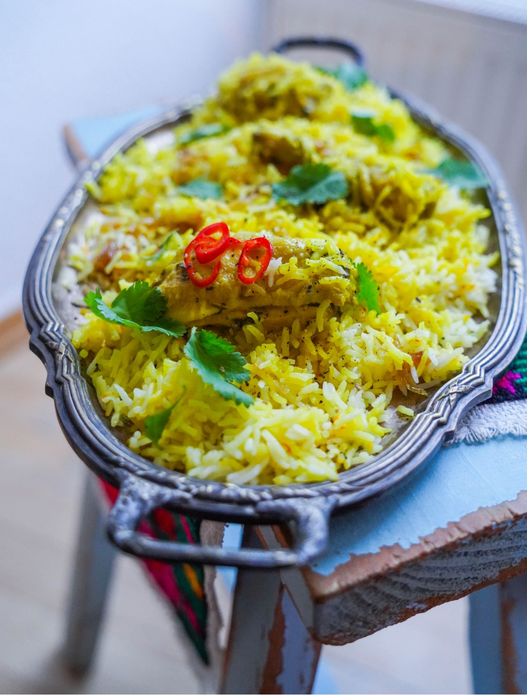

Бирьяни — блюдо, с которым придется немного повозиться, но сложным оно вам покажется только первый раз. Когда вы поймете систему, что с чем мариновать, что в какой момент добавлять, сможете готовить его практически с закрытыми глазами. Блюдо чем-то напоминает плов, но техника приготовления совсем другая.
Я использовала части цыплят с костью (крылышки, ножки, грудку), но обычно берут мякоть, например с бедер, нарезанную на кусочки по 3 см. Блюдо также можно приготовить из баранины, взяв мякоть ноги или лопатки.
Вам может показаться необычным, что в воду для варки риса добавляются масло и лимонный сок. Масло, в любом случае, не повредит, а лимонный сок гарантированно сделает рис рассыпчатым.
Еще один тонкий момент: точное количество добавляемой жидкости рассчитать сложно, потому что мясо (или птица) тоже даст сок. В готовом блюде снизу рис будет более влажным, а в верхнем — более рассыпчатым. Приготовив первый раз, вы поймете, устраивает ли вас текстура риса, и если захотите более рассыпчатый, просто сократите количество жидкости на 50 мл в следующий раз.
По желанию бирьяни можно подать с натуральным йогуртом.
для маринада:
для риса: